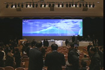
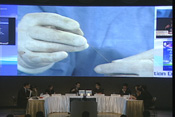
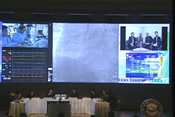
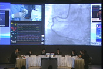
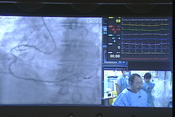
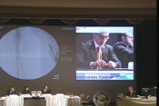

The 12th Kamakura Live Demonstration Course 2005は
大好評のうちに終了致しました。
多数のご参加を頂き誠にありがとうございました。
1,000名以上の医療関係者のご参加を賜りました。



Windows Media Player 9 for Mac OS X
こちらでは2005年12月に開催しました The 12th
Kamakura Live Demonstrationの内容を一部ご紹介しています。
Copyright (C) 2000-2005 Kamakura Live Demonstration Course